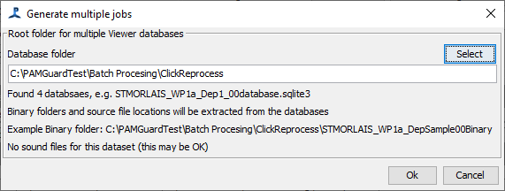

Before you start processing, you need to set up one or more "jobs". Each job requires the name of a folder containing raw sound input data, the name of an output folder for binary data and the name of a database.
The information about each job is stored in a database table called Batch_processing.
To set up a single batch job, click on "Create Job" and a dialog will appear where you can enter the folder for source sound files, the name of the output binary folder and the name of the output database. The dialog differs slightly depending on whether you are setting up normal mode jobs or offline tasks. When setting up normal jobs, you start with sound files and tell the batch processor where to create the output binary files and database, whereas when you set up offline tasks, you're starting with an existing PAMGuard database which should already 'know' where the binary files are.
| |
| Dialog for creating jobs in normal mode | Dialog for creating jobs for offline tasks |
If all of your raw data are in multiple folders on the same hard drive, then it's easy to set up multiple jobs at once. Click the "Create Set" button and select the folder that contains sub folders for each set of data. The files within the sub folders will be searched for sound files to see how many jobs to create. Then select a root folder for databases and a root folder for binary file output. The jobs will then be automatically created with output binary folder names and database names based on the names of the sub folders containing the raw data. For example, if you had data from six deployments named "Deploy1" ... "Deploy6" all in a folder D:/BatchDataSample/raw as shown in the figure below, then simply set the source folder to D:/BatchDataSample/raw and the program will find the six sub folders.

Then select output folders for the binary data and for the databases, which need not be in the same root, but could be anywhere else on your system (e.g. the raw data may be on a server or external hard drive but you write the outputs to your local C drive)
Once you close the dialog, all six jobs will be created and will appear in the jobs table.
Note that nothing will appear yet in the selected output folder. Binary output folders and databases will be created when each job runs. After all six jobs were complete the output folder looked like this, containing six folders of binary data and six databases:

Even if you've deployed near identical instruments, you may have slightly different calibration data for each one, or perhaps hydrophone spacing changed slightly in towed arrays used in different years. To make changes to the hydrophone configuration for each job, right click on the row in the jobs table and select "Add job specific calibration / array data" from the menu. This will open the hydrophone array dialog, where you can update values for hydrophone calibrations and for their exact positions. This will be used to update the configuration for each job just before it runs.
This is very similar to setting up jobs for normal operation, but instead of selecting a folder containing folders of sound files, you'll select a folder containing multiple PAMGuard databases.
The selected folder will be searched for databases (ignoring the one used for the batch processor configuration if it happens to be in the same folder). Details of binary file locations and sound file locations will be automatically extracted from the databases. Note though that these may not be correct if date have moved (e.g. on external hard drives), so you may need to edit the individual jobs once created.
Most offline tasks don't require raw audio data and will be working only on the existing detections, so it's often not a problem if the raw audio is not available.
Individual jobs can be edited by right clicking on a line in the main jobs table.
Created jobs will all appear in the main table in the lower half of the display. You can delete a job by right clicking on it and selecting "Delete Job" from the dropdown menu.
If you want to delete multiple jobs, it's sometimes easier to close PAMGuard and delete jobs from the BatchJobs table.